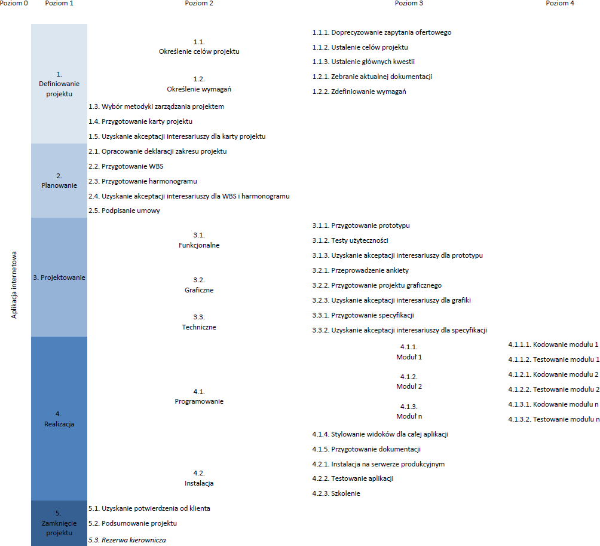
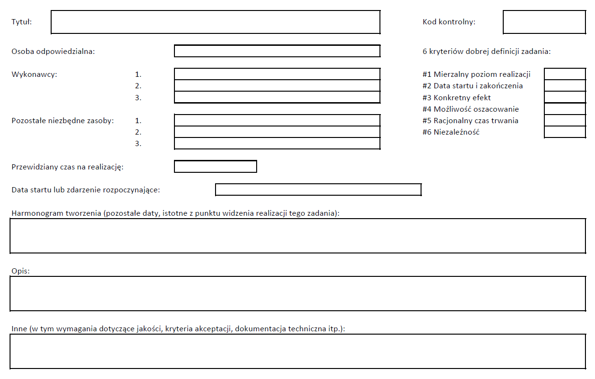

W ramach tego etapu wyróżniamy czynności mające na celu opracowanie planu zarządzania projektem, który będzie uwzględniał zakres projektu, jego czas oraz koszty, a także kwestie związane z jakością, ryzykiem i komunikacją. Dodatkowo na tym etapie należy przewidzieć i zaplanować wykorzystanie zasobów organizacji lub/i ich pozyskanie z otoczenia.
Prace planistyczne należy rozpocząć od sprecyzowania zakresu projektu. Poprzez zakres projektu należy rozumieć definicje wszystkich produktów projektu, jego granice, a więc to co wykracza poza zakres projektu oraz prace, które muszą zostać wykonane przez zespół projektowy w celu wytowrzenia produktów. [1 s.72] Dokument, który zawiera sprecyzowany zakres projektu nazywa się deklaracją zakresu projektu.
Proces tworzenia deklaracji projektu zaczyna się od sformułowania w oparciu o kartę projektu ogólnej definicji, a następnie w wyniku szeregu powtarzanych czynności jest ona uszczegóławiana. Deklaracja zakresu projektu jest wiele razy analizowana i poprawiana aż do momentu stworzenia ostatecznej wersji, która zostanie zaakceptowana przez głównych interesariuszy. Aby uzyskanie akceptacji dla zakresu projektu było łatwiejsze, warto włączać interesariuszy w proces jego definiowania. W ten sposób interesariusze mają też pewność, że zakres projektu pokrywa się z ich wizją i zaspokoi potrzebę biznesową, która była przyczyną do inicjacji projektu. Z chwilą uzyskania akceptacji dla wypracowanego zakresu projektu, powinien on być odporny na zmiany. Oczywiście propozycje zmian będą się pojawiać, ale powinny one przechodzić przez formalny system kontroli zmian, który zapewnia, że do zakresu wprowadzane są tylko niezbędne zmiany. Bardzo ważne jest, aby definicję zakresu projektu zaakceptowali również członkowie zespołu projektowego, którzy ten zakres będą następnie wdrażać. W ten sposób minimalizuje się sytuacje dodawania przez nich funkcjonalności nie ustalonych z klientem na etapie planowania. Oczywiście jeśli potrzeba zmiany wyjdzie od członkow zespołu, to również powinna ona przejść przez formalny system zarządzania zmianami.
Typowa deklaracja zakresu projektu składa się z następujących elementów: [2 s.73-73]
Zaakceptowana deklaracja zakresu projektu jest podstawą do stworzenia struktury podziału pracy (ang. work brakedown strukture – WBS) i katalogu. Struktura WBS jest zbiorem komponentów projektu ukierunkowanych na efekty projektu. Proces tworzenia struktury WBS polega na dekompozycji elementów deklaracji zakresu projektu na mniejsze elementy, aż do uzyskania najmniejszego możliwego, ale zarazem sensownego komponentu tzw. pakietu roboczego. Robert K. Wysocki wyszczególnił sześć cech, które powinien spełniać dobrze wyodrębniony pakiet roboczy. Są to: [2 s.133-136]
Rys. 2.3.1 Przykładowa struktura WBS dla projektu stworzenia aplikacji internetowej
Poszczególne pakiety robocze posłużą do oszacowania czasu trwania projektu i jego kosztu. Pakiety robocze jest łatwiej monitorować i kontrolować niż ogólnie zdefiniowany zakres. Katalog WBS jest to zbiór informacji o poszczególnych elementach WBS, a w szczególności: [1 s.149]
Rys. 2.3.2 Przykładowy wiersz katalogu WBS
W trakcie prac projektowych struktura WBS może być aktualizowana w miarę zdobywania nowych informacji lub w wyniku wprowadzenia zatwierdznych zmian w zakresie projektu. Więcej o strukturze podziału prac i katalogu można znaleźć w książce Haugan G.T.: Effective Work Breakdown Structures. USA. Management Concepts. 2001.
Na etapie planowania warto zdefiniować wymagane role i obowiązki członków zespołów. Jeśli do tej pory nie zostali do projektu przydzieleni konkretni pracownicy, to można to zrobić przy okazji opracowywania planu zasobów ludzkich. Nawet przy małych projektach ważne jest, aby członkowie zespołu projektowego znali swoje obowiązki i zakres odpowiedzialności. Plan ten może uwzględniać kalendarz dostępności poszczególnych pracowników, np. ich urlopy czy pracę przy innych projektach.
Gdy zakres projektu został podzielony na odpowiednio małe pakiety robocze można przystąpić do szacowania czasu ukończenia każdego z nich. Tego rodzaju szacunków dokonuje kierownik projektu, programista lub ekspert. Podczas szacunku czasu, jaki trzeba będzie poświęcić, aby wykonać konkretny pakiet roboczy należy uwzględnić doświadczenie pracownika, który zostanie do tego zadania przydzielony. W projektach informatycznych precyzyjne określenie ile czasu co zajmie jest bardzo trudne. Aby uzyskać bardziej dokładne szacunki, można posłużyć się metodą PERT (ang. program evaluation and review technique). W tym celu należy dla każdego pakietu roboczego przewidzieć trzy czasy realizacji pakietu: pesymistyczny, optymistyczny i najbardziej prawdopodobny. Szacowaniem z wykorzystaniem techniki PERT odbywa się przy użyciu wzoru:
(szacowany czas pesymistyczny + optymistyczny + 4 * najbardziej prawdopodobny) / 6
Podczas szacowania można wykorzystać dotychczasowe doświadczenie czy też informacje archiwalne dotyczące podobnych projektów. Warto w szacunkach uwzględnić rezerwę czasu ogólną dla całego projektu na wypadek zdarzeń niewiadomych lub niepewnych.
Ponieważ w projektach tworzenia aplikacji internetowych głównym kosztem projektu jest czas poświecony na jego realizację, aby oszacować koszt projektu i przygotować jego budżet można skorzystać z szacunków czasu przewidzianego na każdy pakiet roboczy. Czas ten należy pomnożyć przez stawkę godzinową pracownika, który będzie realizował zadanie. Budżet projektu powinien uwzględniać nie tylko koszt pracy programistów, ale również kierownika, specjalistów, koszty związane z przestojami czy też opóźnieniami. Pod uwagę należy również wziąć koszty związane z ewentualnymi zakupami oprogramowania czy też sprzętu. Budżet powinien uwzględniać ryzyko oraz kwestie jakości.
Oszacowanie czasu trwania poszczególnych zadań służy nie tylko obliczeniu kosztu projektu, ale przede wszystkim pozwala zaplanować harmonogram projektu. Jeśli sumaryczna liczba roboczogodzin z szacunków czasu trwania zadań wynosi czterdzieści godzin, nie oznacza to, że projekt zajmie pięć dni roboczych. Może zająć mniej jeśli zadania w projekcie będzie można wykonywać równolegle i zostaną do tego zaangażowane odpowiednie zasoby ludzkie. Może zająć więcej nawet jeśli szacunki czasu trwania poszczególnych zadań były trafne. Dłuższy czas trwania projektu niż sumaryczna liczba roboczogidzin na niego przeznaczona może wynikać z czasu oczekiwania na odpowiedź klienta, czy też niepełnego wymiaru czasu pracy osób zaangażowanych w projekt. Harmonogram jest to narzędzie, które najczęściej w sposób wizualny obrazuje jak zostanie rozłożony czas pracy nad projektem oraz jakie relacje występują pomiędzy poszczególnymi zadaniami.
Na etapie planowania projektu należy uwzględnić kwestię jakości. Jakość dotyczy ostatecznego produktu projektu, produktów cząstkowych, a także całego procesu zarządzania projektem. Jakość produktu głównego i cząstkowych jest osiągnięta wówczas gdy produkty spełniają następujące kryteria: [2 s.34-35]
Przewyższenie wymagań klienta, np. dostarczanie produktu wcześniej lub z dodatkowymi funkcjonalnościami, choć na pewno pozytywnie wpływnie na wizerunek zespołu projektowego, to nie jest jednak elementem zarządzania jakością.
Jakość zarządzania projektem odnosi się do sprawdzania zgodności efektów pracy na różnych etapach projektu z oczekiwaniami wyrażonymi przez odbiorcę. [1 s.390]
Na etapie planowania projektu należy również uwzględnić kwestię ryzyka. Ryzyko jak wcześniej wspomnino jest to prawdopodobieństwo wystąpienia zdarzenia w przyszłości, którego efekty mogą mieć za równo negatywny jak i pozytywny wpływ na realizację projektu. Częściej ryzyko utożsamiane jest ze zdarzeniami o negatywnym wpływie na projekt, jednak te o pozytywnym wpływie również wchodzą w zakres analizy ryzyka. Jeśli wystąpienie zdarzenia jest pewne, takie zdarzenie nawet o negatywnym wpływie na projekt, nie jest przedmiotem analizy i zarządzania ryzykiem. Analiza i zarządzanie ryzykiem skupia się wokół identyfikacji ryzyka, kalkulacji prawdopodobiństwa wystąpienia zdarzenia niepewnego, oszacowania jego skutków, a także decyzji jak reagować na poszczególne ryzyka.
Ponieważ jedną z przyczyn niepowodzeń projektów jest słaba komunikacja [3 s.17], warto aby już na etapie planowania projektu podejmować działania mające na celu jej usprawnienie. W planie zarządzania komunikacją należy zidentyfikować kto może potrzebować jakich informacji, kiedy będą one potrzebne, kto może je dostarczyć i w jaki sposób.
Bardzo prawdopodobne, że realizacja projektu będzie wymagała pozyskania zasobów spoza ogranizacji. Jednymi z najczęstszych przyczyn, dla których warto rozważyć wykorzystanie zewnętrznych zasobów, są brak odpowiednich umiejętności i kompetencji wśród zespołu projektowego i pracowników organizacji, większa efektywność i mniejsze koszty zakupu rozwiązania versus samodzielne jego wypracowanie oraz dostępność na rynku produktu, który w pełni zaspokoi potrzeby zespołu projektowego. [2 s.77] Aby proces pozyskania zasobów z zewnątrz przebiegł sprawnie należy przygotować plan zarządzania zamówieniami, który uwzględnia identyfikowanie potrzeby zakupu, sposób składania zamówienia, następnie metody jego administrowania aż do ostatecznego zamknięcia. Ważnym elementem planu zarządzania zamówieniami jest zestawinie zakresu prac (ang. statement of work – SOW), który stanowi dla potencjalnych dostawców bazę do formułowania ofert.
Planowanie jest prawdopodobnie najbardziej bagatelizowanym a jednocześnie najważniejszym etapem zarządzania projektem. Wymaga dokładności i czasu, a niestety czasu najczęściej w projekcie brakuje. Według Roberta Wysockiego planowanie (bez określania zakresu projektu) małych projektów powinno zająć jeden dzień. [2 s.116]
[1] Philips J.: Zarządzanie projektami IT. Gliwice. Helion. 2011.
[2] Wysocki R.K.: Effective Project Management: Traditional. Agile, Extreme. Indianapolis. 2009. Wiley Publishing Inc.
[3] PwC: Insights and Trends: Current Portfolio, Programme, and Project Management Practices. pwc.com. 2012.